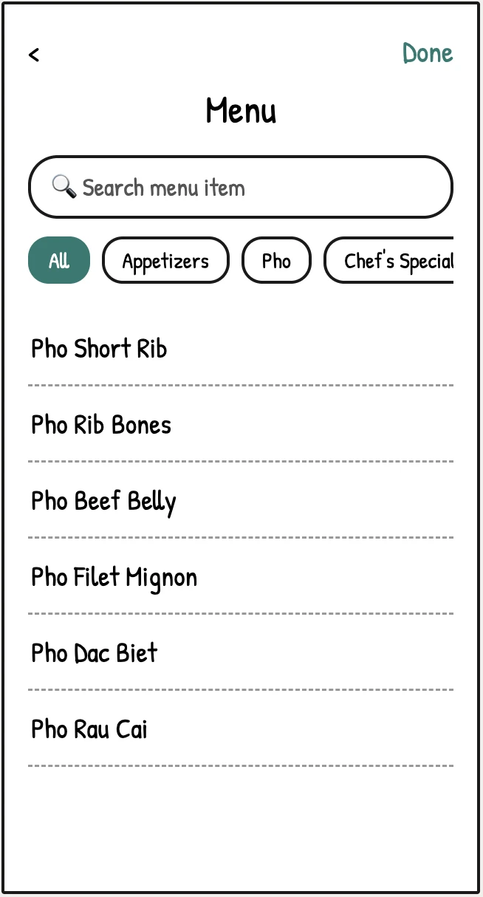
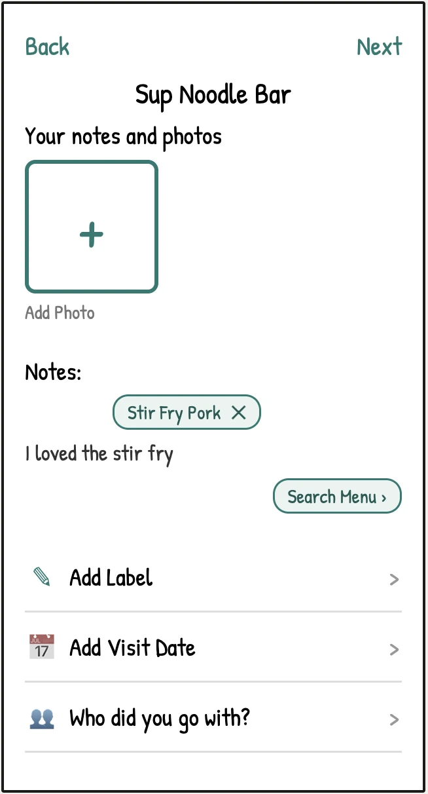
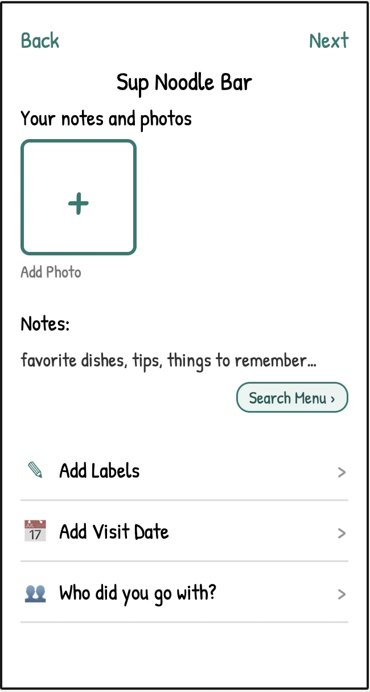

Restructured Rating Page
- Photos moved to the top for max visibility
- Progressive disclosure breaks the review into steps
- Autofill suggestions speed up dish logging

Food Rating App
Problem
Beli's rating page overwhelmed users with too many choices at once, and the absence of menu search forced them to recall dish names from memory, turning a simple task into a frustrating, high-effort experience.
Solo
UX/UI Designer
Jan – Mar 2025
Key Outcome
Redesigned the rating page to reduce choice overload and introduced Menu Search with Smart Autofill, giving users a faster, memory-free way to log specific dishes and removing unnecessary steps from the logging flow.
What I Drove
Beli is a food rating and restaurant tracking app. I redesigned the rating page and introduced menu search with autofill to make logging reviews faster, with less memory burden and fewer unnecessary choices.
You are now viewing:
01 Solution

02 Research: User Interviews
I use Beli to track every restaurant I visit, but rating meals was always a struggle since I could never remember what I ordered. That friction made me want to interview other users to see if they ran into the same problem.
To validate whether this friction was widespread, I surveyed five Beli users aged 18–30. Three clear patterns emerged that shaped every design decision that followed.
User Finding
forget the name of their menu item at least 50% of the time when rating a restaurant.
Most Commonly Used Features
Least Commonly Used Feature
with 80% of users saying they rarely or never use it, often because they don't have one single favorite dish to add.
"I never understood why Beli put the 'Add Photos' option at the bottom of the screen. It's the feature I use the most, and it's hard to find."— Beli User
"Sometimes you just don't have one favorite dish, and other times you may have many, so I usually just include all of my options in the notes section."— Beli User
03 Define
Users didn't log reviews the way the app expected. They forgot dish names, skipped features like Favorite Dishes and Tags, and instead wrote everything in Notes to avoid extra steps. This wasn't a feature gap, it was a mismatch between the app's mental model and the user's actual post-meal behavior.
These findings shaped two core objectives:
How can we implement a system that lets users find and log dishes without relying on recall?
How can we reorganize the rating screen to reduce cognitive overload and make the review process feel fast, not tedious?
04 Ideation
I narrowed the menu search problem to three possible approaches, drawing from features on everyday platforms that unconsciously made recall easier and integrated smoothly into the flow: an autofill suggestion bar, a searchable menu, and an @ symbol shortcut to trigger search.
| Approach | ✓ Strengths | ✗ Weaknesses |
|---|---|---|
| Autofill / Suggestion Bar |
|
|
| Menu Search |
|
|
| @ Symbol to Trigger Search |
|
|
I decided to combine autofill and menu search. If users remember part of a dish, autofill helps them find it instantly. If they don't remember anything, they can browse the full menu by category. Together, these features make finding dishes easy without introducing a new interaction pattern.
05 Design
Before building anything, I sketched all three changes in parallel to see how they'd work together as one cohesive flow, not three separate features bolted on.



From these sketches, I created a mid-fidelity mockup that places "Add Photos" prominently at the top, matching the most-used feature to the highest-visibility position.

To avoid feature overload on the rating page, I used progressive disclosure to break the review process into sequential steps so each screen asks the user to do one thing at a time.

06 Possible Impact
If these features shipped, the questions I'd want to answer are whether the changes actually reduced the friction users reported and whether the new features got used.
Average time to complete a review from open to submit
Average taps required to add a specific dish to a review
Rate at which users accept autofill suggestions when they appear
Percentage of reviews that include a menu search interaction
User-rated difficulty of completing a review (post-task survey)
07 Reflection
This project taught me how much friction can hide in a seemingly small interaction. The core problem sounds minor, but it exposed a deeper misunderstanding between how the app was structured and how people actually behave after a meal.
It also showed me how simple features integrated directly into the existing flow, paired with minor visual changes that emphasize hierarchy, can change the whole experience.
back to top ↑